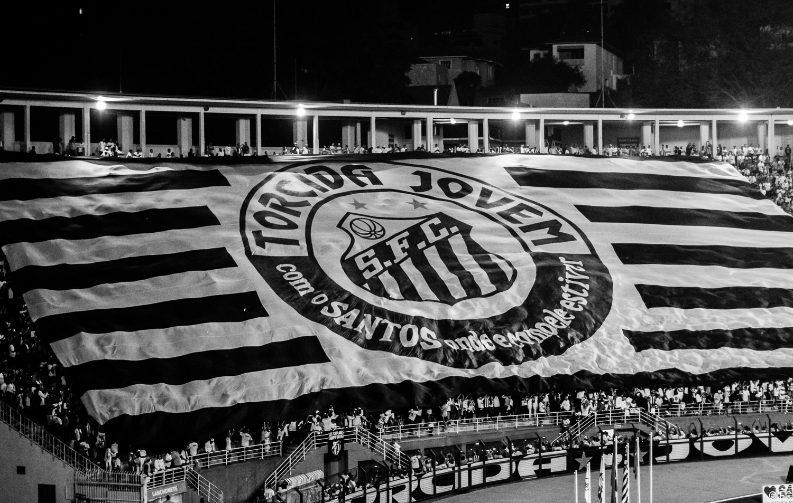
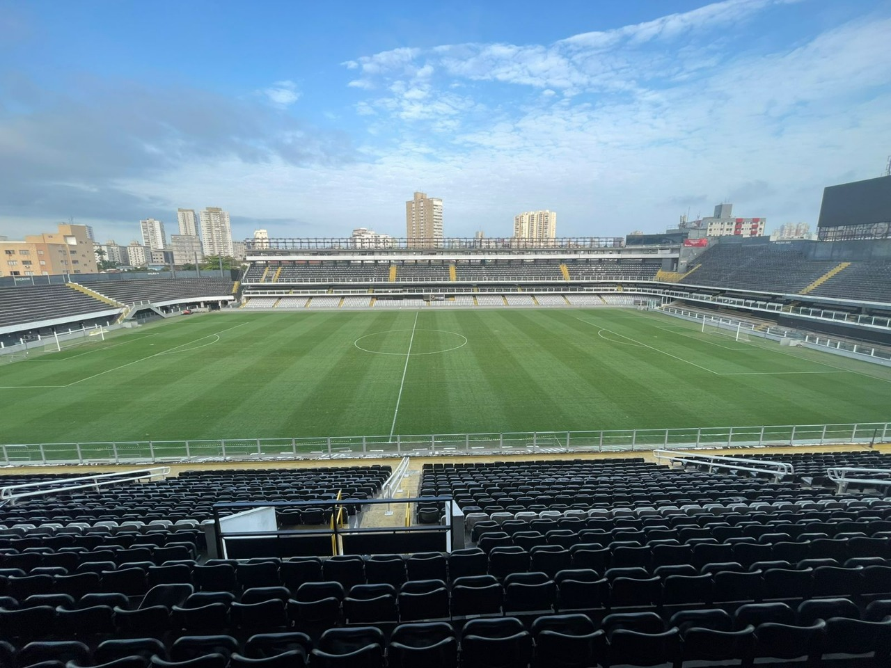

Players Summary
Explore profiles of the club's most influential players, from Pelé to modern stars who began at Santos.

Santos Football Club, founded in 1912, is one of Brazil's most celebrated football teams. The club gained worldwide fame during the Pelé era in the 1950s and 1960s and has produced numerous world-class talents.
Key milestones include international cups, multiple national championships, and a strong youth development tradition that launched stars like Pelé and Neymar.
Explore profiles of the club's most influential players, from Pelé to modern stars who began at Santos.
Major honors include national championships, Copa Libertadores victories and international club titles. See the Trophies page for aggregated counts.
